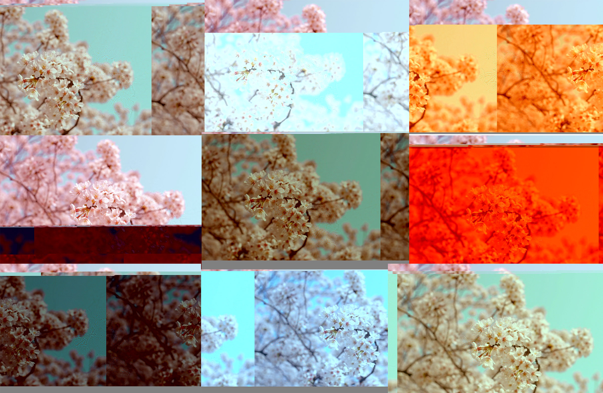

This is the second version of the project that I attempted.

I wasn't satisfied with the first variation of the glitch project that I made (the mountain one) and decided to make one that I was much more confident in. The overall process was the same as the first - utilizing a text editor to open an image that converted it into code, then messing around with several duplicates of each image variant, and finally collaging them into one final image.
This image gallery doesn't show every single photo, but the ones I'm most proud of plus the completed project.